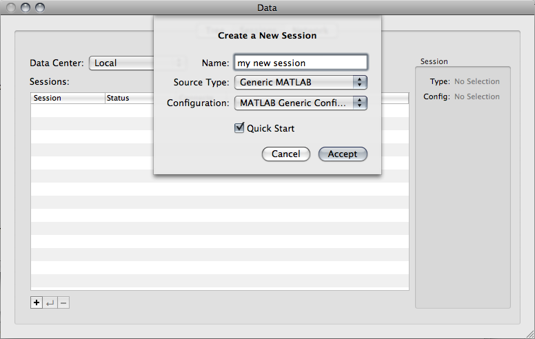
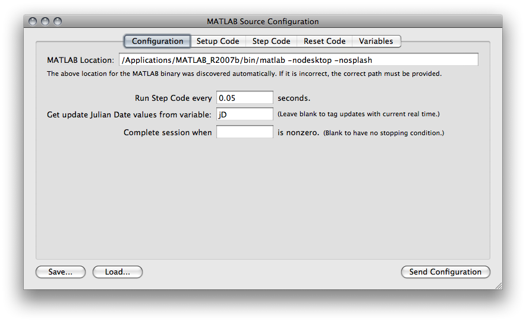
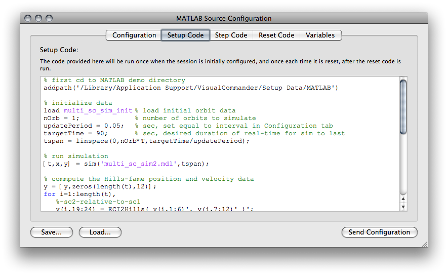
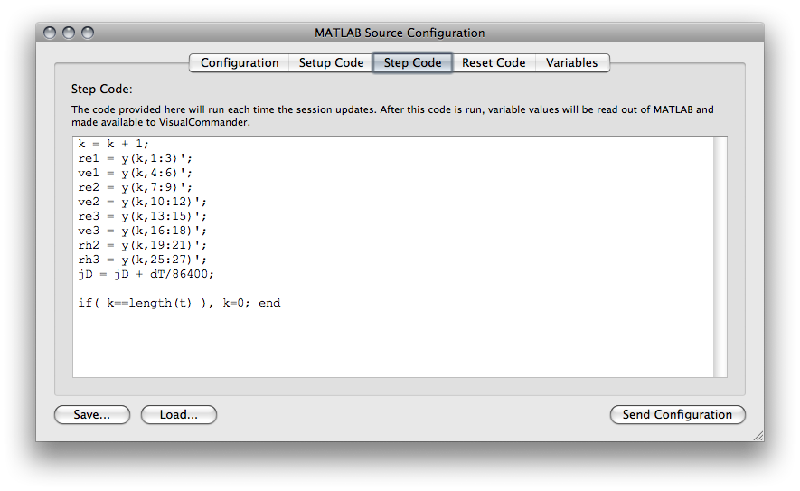
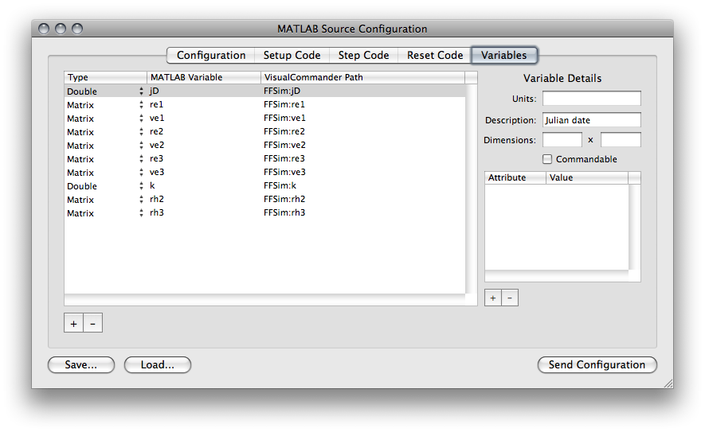

The MATLAB Data Source provides a built-in mechanism for VisualCommander to interact with your MATLAB application. The potential uses include:
The MATLAB Data Source can be configured in a variety of ways. Each new configuration can be saved to a configuration file (.vcmsc), so that you can build your own set of MATLAB interfaces for different projects. To get started, open the Data window (CMD+D) and click on the Sessions tab. Start a new session by hitting the add box (+) at the bottom left corner -- a popup menu appears. Choose "Generic MATLAB" from the Source Type pulldown, and enter a name for your session.
The MATLAB Source Configuration window appears. It includes several tabs that enable you to customize the MATLAB Data Source. The data source configuration for the Formation Flying Simulation demo is used here for an example. Note: This demo is only supported for Intel-based Macs.
The configuration tab is shown below. In this tab, you specify the location of the MATLAB application, the rate at which you want to exchange data with the MATLAB process, a reference time for VisualCommander, and a stopping condition.
In the "Setup Code" tab, you enter the MATLAB code that you wish to run first. This is run when the session is first configured, and each time it is restarted. The "Reset Code" tab is similar, it includes the code that should run after the session is reset. The reset code would run before the setup code after a reset occurs. The "Setup Code" tab is shown below.
In the "Step Code" tab, you enter the MATLAB code that you wish to run each time the session updates. After this code is run, variable values will be read out of MATLAB and made available to VisualCommander.
In the "Variables" tab, you define the variables that you wish to make available to VisualCommander. The column for "MATLAB Variable" includes all of the variables that exist in MATLAB that you wish to share with VisualCommander. The "VisualCommander Path" column includes the path to the variable in the VisualCommander database. Each variable must be prepended with the session name that you decide to use. If desired, certain variables can be assigned attributes with values, in order for them to be used with VisualCommander displays that require such metadata.
